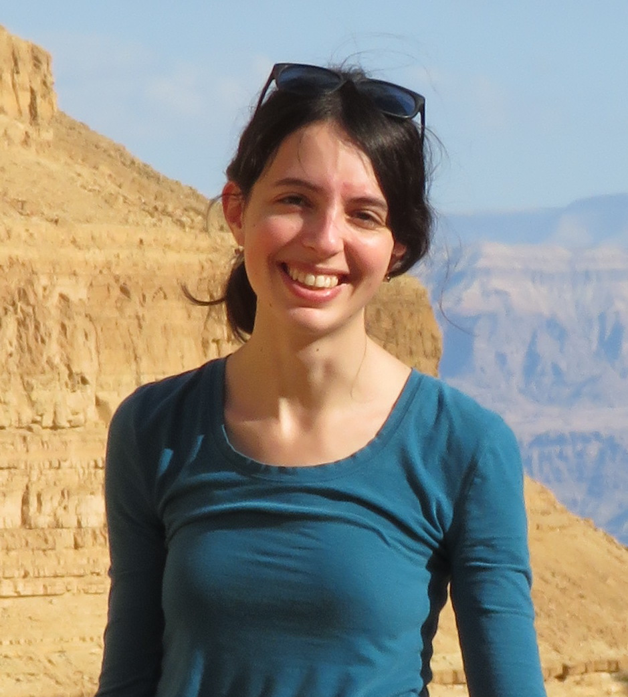
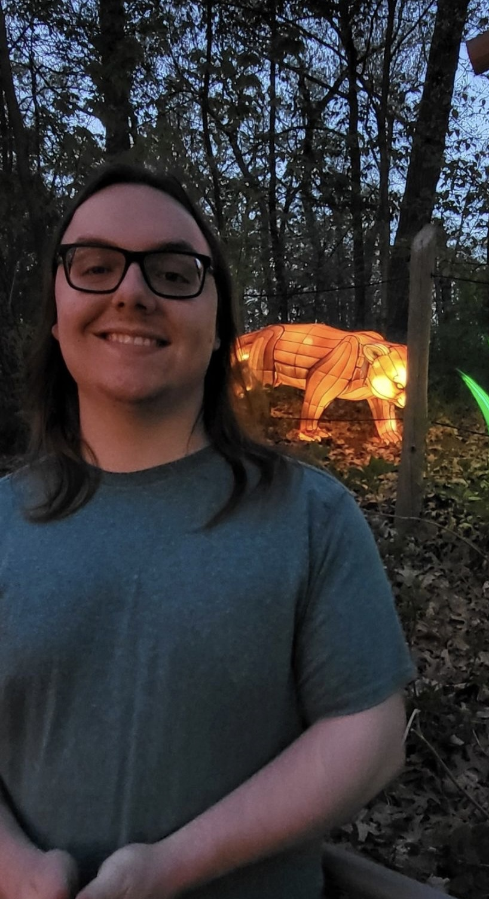

BS 2019, University of Michigan
Tali is currently a PhD student at the University of Chicago.
Tali Khain
Tali is currently a PhD student at the University of Chicago.

Michelle Belkovski
In her undergraduate work, Michelle led a paper assesing the feasibility of core accretion formation pathways in the HIP 41378 system (Belkovski et al. 2022).
Drew Weisserman
Drew is now a master's student at McMaster University, and worked with PI Becker on characterizing the Kepler-80 system of transiting planets (Weisserman et al. 2023).

BS 2022, University of Michigan
Lucas Brefka
Lucas graduated from UMich in 2022 (after writing Brefka & Becker 2021) with a dual bachelor's degree in astronomy/astrophysics and interdisciplinary physics and is now a second-year astronomy graduate student at Penn State.